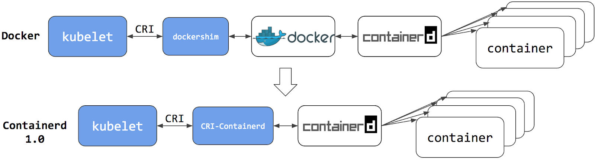

The dockershim component of Kubernetes allows the use of
Docker as a Kubernetes's container runtime. Kubernetes'
built-in dockershim component was removed in release
v1.24.
This page explains how your cluster could be using Docker as a
container runtime, provides details on the role that
dockershim plays when in use, and shows steps you can take
to check whether any workloads could be affected by
dockershim removal.
Finding if your app has a dependencies on Docker
If you are using Docker for building your application containers, you can still run these containers on any container runtime. This use of Docker does not count as a dependency on Docker as a container runtime.
When alternative container runtime is used, executing Docker commands may either not work or yield unexpected output. This is how you can find whether you have a dependency on Docker:
- Make sure no privileged Pods execute Docker commands (like
docker ps), restart the Docker service (commands such assystemctl restart docker.service), or modify Docker-specific files such as/etc/docker/daemon.json. - Check for any private registries or image mirror settings in the
Docker configuration file (like
/etc/docker/daemon.json). Those typically need to be reconfigured for another container runtime. - Check that scripts and apps running on nodes outside of your
Kubernetes infrastructure do not execute Docker commands. It might be:
- SSH to nodes to troubleshoot;
- Node startup scripts;
- Monitoring and security agents installed on nodes directly.
- Third-party tools that perform above mentioned privileged operations. See Migrating telemetry and security agents from dockershim for more information.
- Make sure there are no indirect dependencies on dockershim behavior. This is an edge case and unlikely to affect your application. Some tooling may be configured to react to Docker-specific behaviors, for example, raise alert on specific metrics or search for a specific log message as part of troubleshooting instructions. If you have such tooling configured, test the behavior on a test cluster before migration.
Dependency on Docker explained
A container runtime is software that can execute the containers that make up a Kubernetes pod. Kubernetes is responsible for orchestration and scheduling of Pods; on each node, the kubelet uses the container runtime interface as an abstraction so that you can use any compatible container runtime.
In its earliest releases, Kubernetes offered compatibility with one
container runtime: Docker. Later in the Kubernetes project's history,
cluster operators wanted to adopt additional container runtimes. The CRI
was designed to allow this kind of flexibility - and the kubelet began
supporting CRI. However, because Docker existed before the CRI
specification was invented, the Kubernetes project created an adapter
component, dockershim. The dockershim adapter allows the
kubelet to interact with Docker as if Docker were a CRI compatible
runtime.
You can read about it in Kubernetes Containerd integration goes GA blog post.

Switching to Containerd as a container runtime eliminates the middleman. All the same containers can be run by container runtimes like Containerd as before. But now, since containers schedule directly with the container runtime, they are not visible to Docker. So any Docker tooling or fancy UI you might have used before to check on these containers is no longer available.
You cannot get container information using docker ps or
docker inspect commands. As you cannot list containers, you
cannot get logs, stop containers, or execute something inside a
container using docker exec.
Note:
If you're running workloads via Kubernetes, the best way to stop a container is through the Kubernetes API rather than directly through the container runtime (this advice applies for all container runtimes, not only Docker).
You can still pull images or build them using
docker build command. But images built or pulled by Docker
would not be visible to container runtime and Kubernetes. They needed to
be pushed to some registry to allow them to be used by Kubernetes.
Known issues
Some filesystem metrics are missing and the metrics format is different
The Kubelet /metrics/cadvisor endpoint provides
Prometheus metrics, as documented in Metrics
for Kubernetes system components. If you install a metrics collector
that depends on that endpoint, you might see the following issues:
The metrics format on the Docker node is
k8s_<container-name>_<pod-name>_<namespace>_<pod-uid>_<restart-count>but the format on other runtime is different. For example, on containerd node it is<container-id>.Some filesystem metrics are missing, as follows:
container_fs_inodes_free container_fs_inodes_total container_fs_io_current container_fs_io_time_seconds_total container_fs_io_time_weighted_seconds_total container_fs_limit_bytes container_fs_read_seconds_total container_fs_reads_merged_total container_fs_sector_reads_total container_fs_sector_writes_total container_fs_usage_bytes container_fs_write_seconds_total container_fs_writes_merged_total
Workaround
You can mitigate this issue by using cAdvisor as a standalone daemonset.
- Find the latest cAdvisor release
with the name pattern
vX.Y.Z-containerd-cri(for example,v0.42.0-containerd-cri). - Follow the steps in cAdvisor Kubernetes Daemonset to create the daemonset.
- Point the installed metrics collector to use the cAdvisor
/metricsendpoint which provides the full set of Prometheus container metrics.
Alternatives:
- Use alternative third party metrics collection solution.
- Collect metrics from the Kubelet summary API that is served at
/stats/summary.
What's next
- Read Migrating from dockershim to understand your next steps
- Read the dockershim deprecation FAQ article for more information.